SBC rank visualizations
Martin Modrák
2025-08-08
Source:vignettes/rank_visualizations.Rmd
rank_visualizations.RmdThis vignette aims to explain how to interpret various visualizations of the main results of SBC: the posterior ranks. If the model + algorithm works correctly, the posterior ranks of the prior draws should be distributed uniformly. While one could test for this uniformity numerically via some sort of statistical test, it is often more informative to look at visualizations that not only tell us whether a problem appears, but what kind of problem and how severe it is.
In this vignette, we’ll first explain each of the visualizations individually and then show them side-by-side for the same configuration.
Simulation setup
We’ll use the built-in example that simulates ranks using a known correct distribution and a specific distribution that is actually observed.
set.seed(22654885)
res_50 <- SBC_example_results("visualizations", n_sims = 50)
# The example results have this extra attribute showing analytic densities,
# this is not a part of normal SBC results
density_df <- attr(res_50, "density_df") This is how the corresponding analytical densities look like - in the “Exact match” case they overlap and SBC should pass, in all other cases it should signal issues.
plot_density_comparison <- function(density_df) {
ggplot(density_df, aes(x = x, y = density, color = type, linewidth = type)) +
geom_line(data = dplyr::filter(density_df, type == "Correct")) +
geom_line(data = dplyr::filter(density_df, type == "Observed"), alpha = 0.8) +
facet_wrap(~variable) +
scale_color_manual("", values = c("Correct" = "skyblue1",
"Observed" = "black")) +
scale_linewidth_manual("", values = c("Correct" = 2,
"Observed" = 1)) +
theme(legend.position = "bottom")
}
plot_density_comparison(density_df)
Now let’s look how these issues manifest in various plots:
plot_rank_hist - The rank histogram
Rank histogram is probably the simplest of the visualizations. We plot a histogram of the ranks and look if all bins are roughly equally represented. The expected average count is shown as a horizontal black line, and an approximate interval highlighting expected deviations (by default 95%) is shown as the light blue wedged rectangle in the background.
plot_rank_hist(res_50)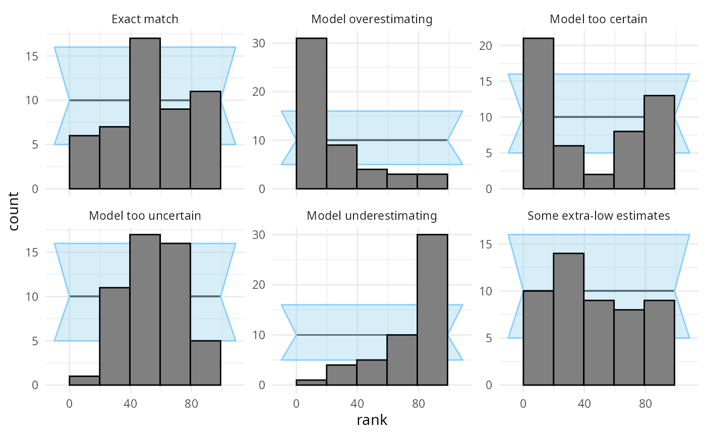
The two main disadvantages of this plot are:
- Since the confidence interval is only approximate, it cannot be taken too seriously. However, gross violations are still immediately visible.
- It is sensitive to the choice of number of bins. There is a tradeoff in that more bins mean more resolution, but less power to detect some violations of uniformity. Additionally, one needs to be mindful of the total number of ranks as the number of bins should preferably divide the number of ranks.
This is the reason why the “Some extra-low estimates” case is not visible with the default number of bins - the extra low estimates (and thus high ranks) get smoothed by being combined into a wider bin. We can plot the same results but with the maximum number of bins (100, as the ranks in our case range from 0 to 99):
plot_rank_hist(res_50, bins = 100)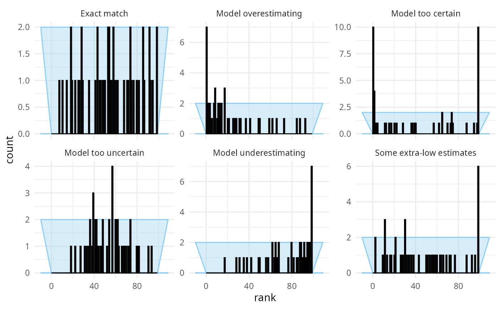
This lets us see something suspicious for the “Some extra-low estimates” case, but we’ve increased noise overall and the other patterns become harder to see.
Additionally, if the number of bins does not divide the total number of ranks (here 100) neatly, some bins are expected to get slightly more ranks than others. The plot compensates for this by extending the confidence interval to cover both cases, resulting in some loss of precision - here a particularly bad choice of the number of bins obscures problems in “Model too uncertain” and “Some extra-low estimates”.
plot_rank_hist(res_50, bins = 17)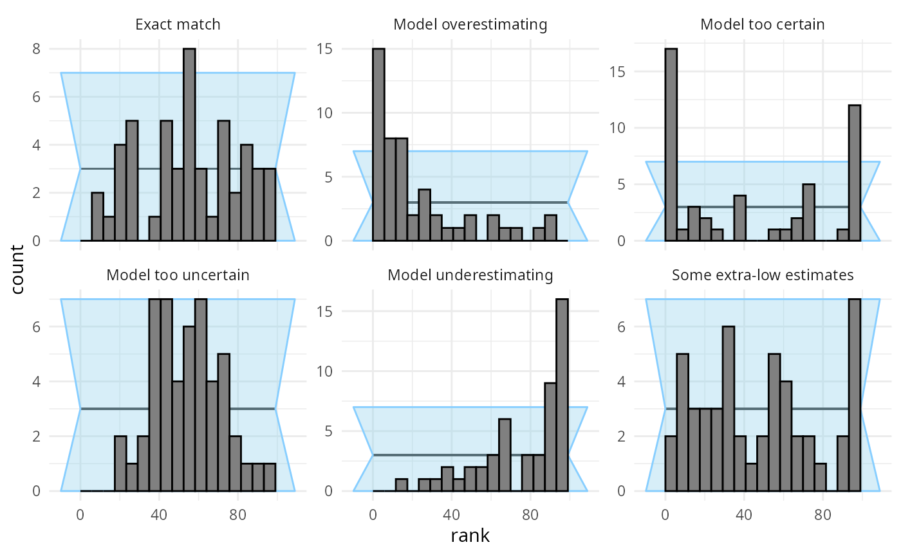
Choice of number of bins obviously becomes less of a problem, if we have a large number of simulations. With 1000 simulations, the patterns are clear and unmistakable.
res_1000 <- SBC_example_results("visualizations", n_sims = 1000)
plot_rank_hist(res_1000)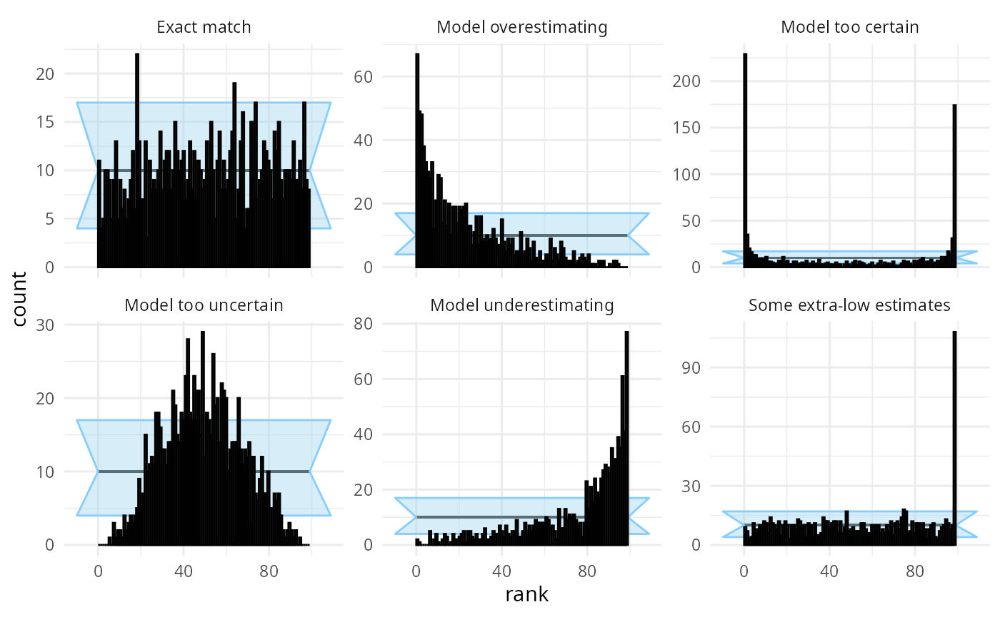
We should also note that since we are essentially performing many comparisons, seeing a low number of “failures” in some bins is to be expected and does not necessarily signal a problem - in the plot above the “Exact match” case has several bins outside of the approximate confidence interval.
plot_ecdf and plot_ecdf_diff - ECDF
plots
These two related plots remedy the main problems of the rank histogram - they do not depend on any binning and provide exact confidence intervals. The ECDF plot shows the empirical cumulative distribution function (ECDF). If ranks were perfectly uniform, this would be a “diagonal staircase”, but some deviations from exact uniformity are to be expected. The ECDF plot shows aN ellipse outlining the expected deviations (by default at the 95% level). It looks like this:
plot_ecdf(res_50)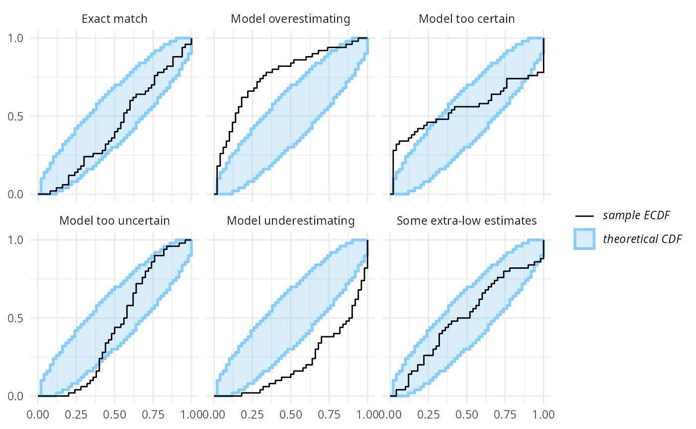
A minor problem with this visualization is that the top-left and bottom-right parts of the plot are usually left unused and as the number of simulations grows, it may become hard to discern details in the center. Let us look at the same plot from 1000 simulations:
plot_ecdf(res_1000)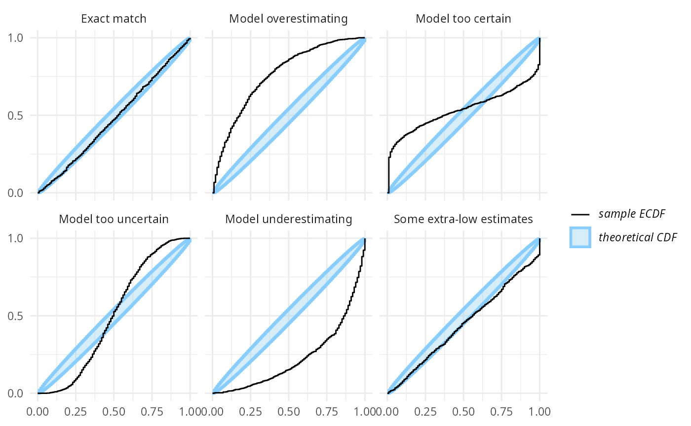
Now it gets a bit hard to see, whether the “Exact match” case is well within the ellipse or rather hitting the boundaries.
The ECDF diff plot shows exactly the same information as the ECDF plot, but looks not at the ECDF itself, but rather on the difference between the perfectly uniform CDF and the ECDF. In other words, it rotates the ECDF plot by 45 degrees to the right to make the uniform CDF a flat line:
plot_ecdf_diff(res_1000)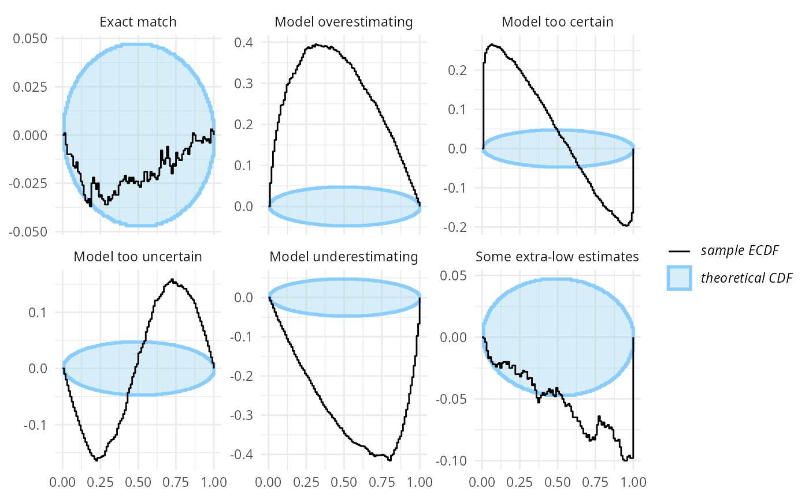
Now, we get a much increased resolution for the “Exact match” case. Also note that in the rank histogram the “Some extra-low estimates” case showed only as a failure in the highest ranks. However, the ECDF and ECDF diff plots also show how the slight under-abundance of the low ranks - which is not noticeable when looking at each rank / rank bin individually - slowly adds up and by 50th percentile we already see a problem.
The ECDF diff plot usually looks better than the ECDF plot even with lower number of simulations and is thus preferable to ECDF in most cases:
plot_ecdf_diff(res_50)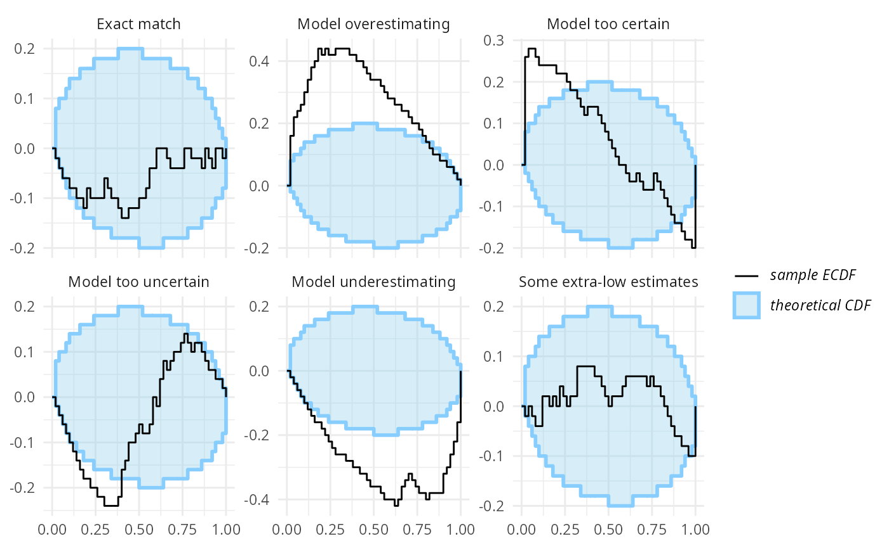
A downside of the ECDF and especially the ECDF diff plot is that the connection between the shape seen in the plot and the type of the failure is less straightforward.
plot_coverage and plot_coverage_diff -
Empirical coverage
The rank histogram and both ECDF plots are useful for noticing that there is a problem in the model and what type of mismatch are we seeing. However, it is a bit harder to interpret how bad the failures actually are for inference and how large problems could still be unnoticed because we ran too few simulations.
The empirical coverage tries to help with that. It builds on the
empirical_coverage() function and by default shows the
coverage of the central posterior credible intervals (coverage is the
proportion of true variable values that fall within the interval). A
well working model would have coverage exactly match interval width
(i.e. 95% credible interval contains the true value 95% of the time) as
shown by the blue line. The focus on central intervals is often more
relevant to inference than the leftmost intervals implied in the ECDF
plots. The coverage is accompanied by approximate credible intervals for
the coverage (gray).
plot_coverage(res_50)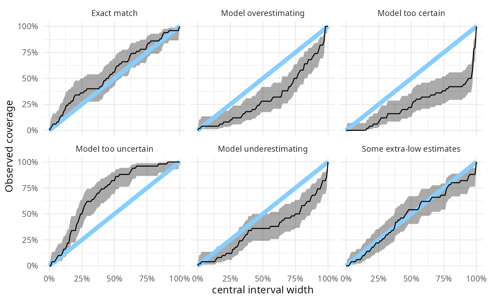
This lets us neatly see that with 50 simulations, we still cannot rule even relatively large miscalibration in the “Exact match” case where e.g. the 50% central interval could still contain about 70% of the true values. A downside of the focus on central intervals is that underestimation and overestimation now produce the same overall shape in the plot.
For similar reasons as with the ECDF plot, there is also “difference” version of the plot that takes the differences in coverage into focus.
plot_coverage_diff(res_50)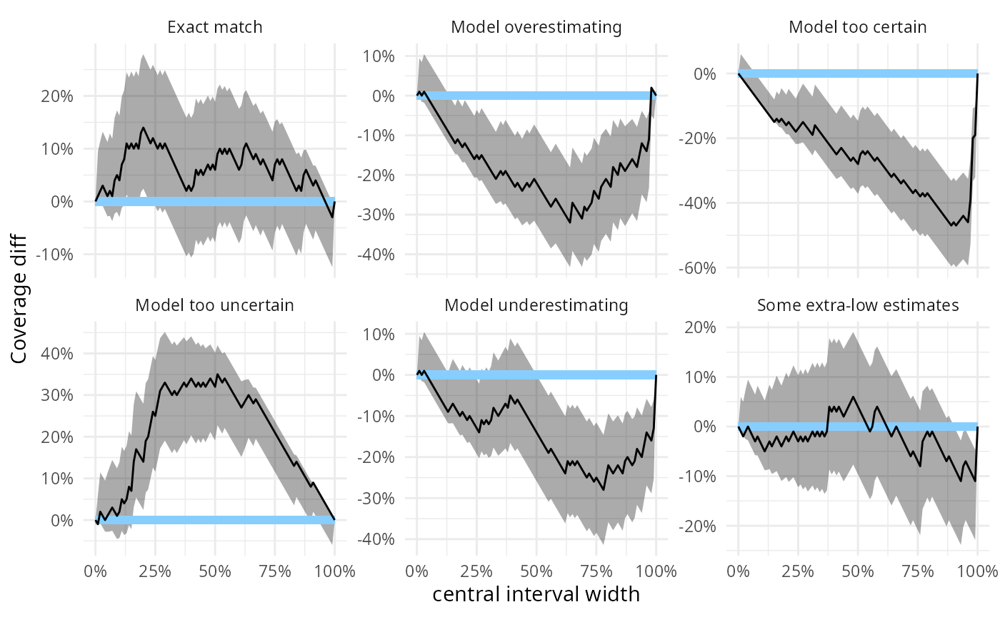
In the example here, all the problematic scenarios manifest also as
problems on the empirical coverage plot. However, empirical coverage,
especially for the central intervals has some notable limitations as a
diagnostic and thus should always be complemented by a rank histogram /
ECDF plot - see help(empirical_coverage) for some
additional details.
Side by side comparison
To let us better understand how the various plots relate, we will know plot the scenarios one by one, showing all plots for the same scenario side-by-side.
plot_side_by_side <- function(res, var) {
legend_bottom <- theme(legend.position = "bottom",
legend.direction = "vertical",
legend.margin = margin(t=-1, unit = "cm")
)
# Hack - use variable name to show plot type
density_df_to_plot <- dplyr::filter(density_df, variable == var)
density_df_to_plot$variable <- "Densities"
stats <- dplyr::filter(res$stats, variable == var)
p_dens <- plot_density_comparison(density_df_to_plot) +
legend_bottom
p_rank <- plot_rank_hist(dplyr::mutate(stats, variable = "Rank histogram"))
p_ecdf <- plot_ecdf(dplyr::mutate(stats, variable = "ECDF")) + legend_bottom
p_ecdf_diff <- plot_ecdf_diff(dplyr::mutate(stats, variable = "ECDF diff")) + legend_bottom
p_coverage <- plot_coverage(dplyr::mutate(stats, variable = "Coverage"))
p_coverage_diff <- plot_coverage_diff(dplyr::mutate(stats, variable = "Coverage diff"))
p_dens + p_ecdf + p_ecdf_diff + p_rank + p_coverage + p_coverage_diff +
plot_annotation(var)
}We will start with the “Exact match” (i.e. no problem) scenario with 50 simulations.
plot_side_by_side(res_50, "Exact match")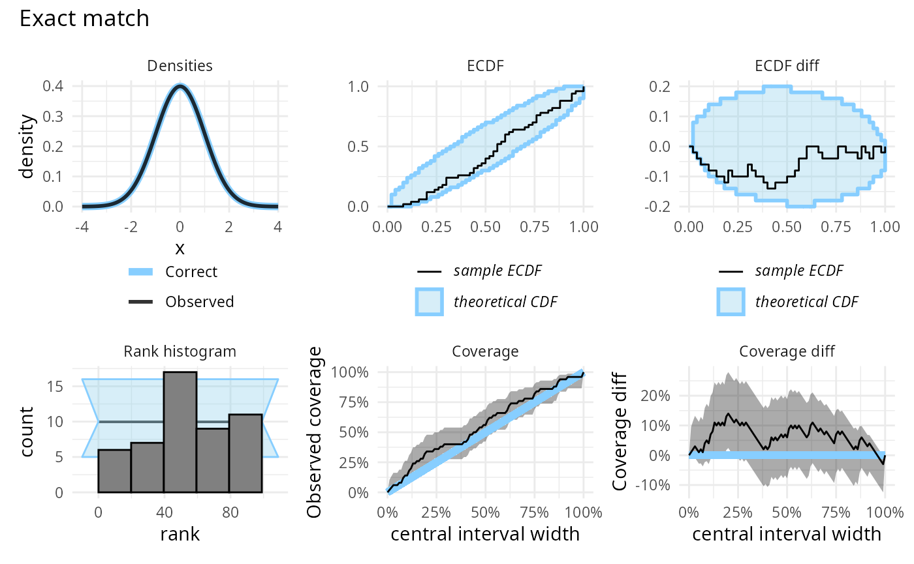
The relative utility of the _diff versions of the plots
changes if we have more simulations:
plot_side_by_side(res_1000, "Exact match")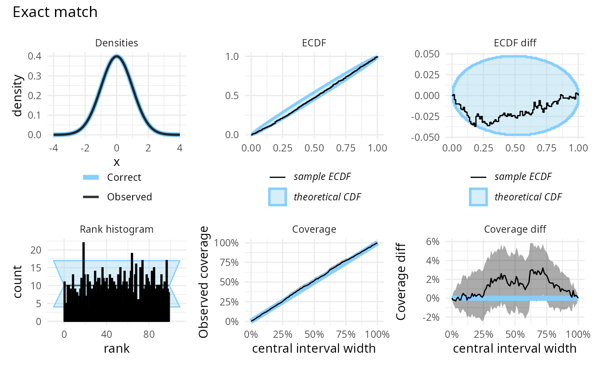
If the model is too certain, it will have over-abundance of extreme ranks and lower than expected coverage. Note also that since we are looking at central intervals, the discrepancies in the lower and upper tail combine to produce a large discrepancy on the coverage plot, although the discrepancy on the ECDF plot is modest.
plot_side_by_side(res_50, "Model too certain")
If the model is overly uncertain, it will have overabundance of central ranks (and too few extreme ranks) and the coverage will be higher than expected. Similarly to the previous case, the discrepancies in the lower and upper tail combine to produce a large discrepancy on the coverage plot, although the discrepancy on the ECDF plot is barely visible.
plot_side_by_side(res_50, "Model too uncertain")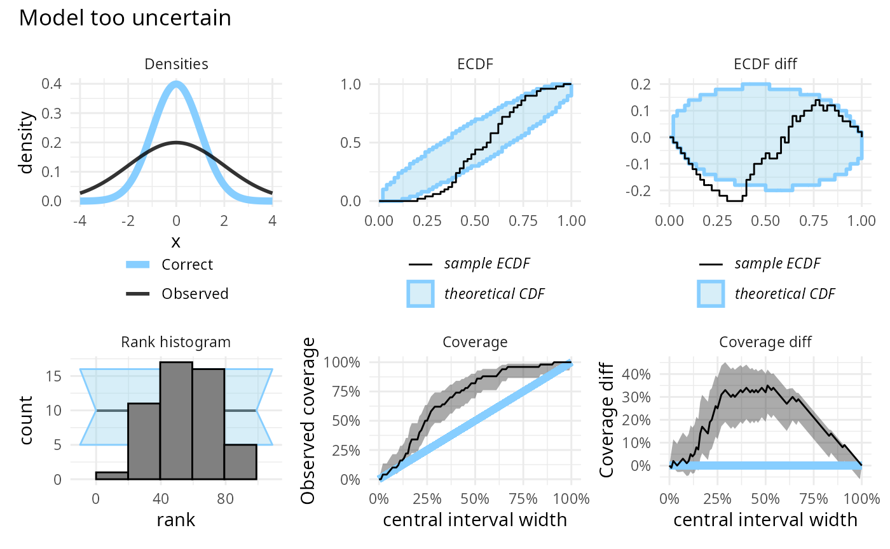
If the model is underestimating, we will see too many high ranks and coverage will be lower than expected.
plot_side_by_side(res_50, "Model underestimating")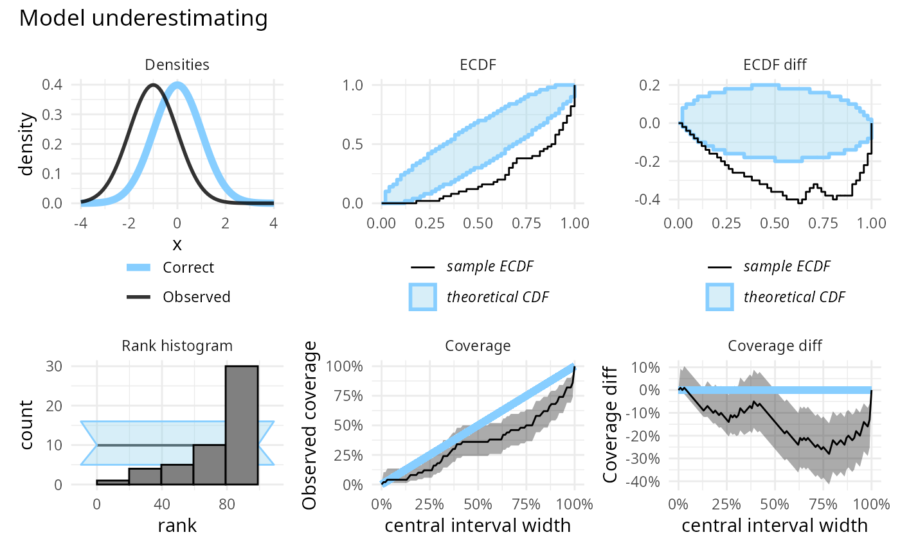
If the model is overestimating we will see too many low ranks, while the effect on central interval coverage will be similar to underestimation and the coverage will be lower than expected.
plot_side_by_side(res_50, "Model overestimating")